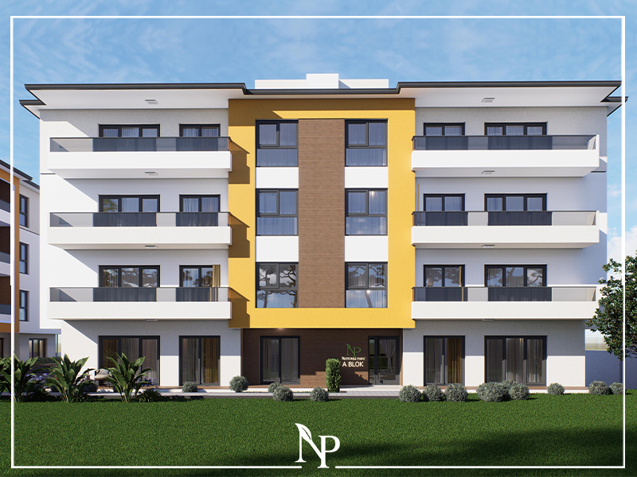
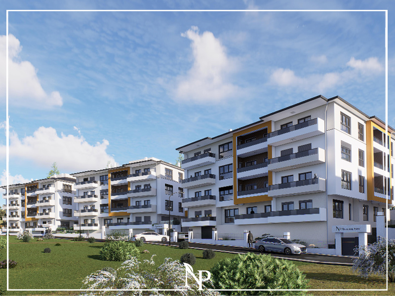
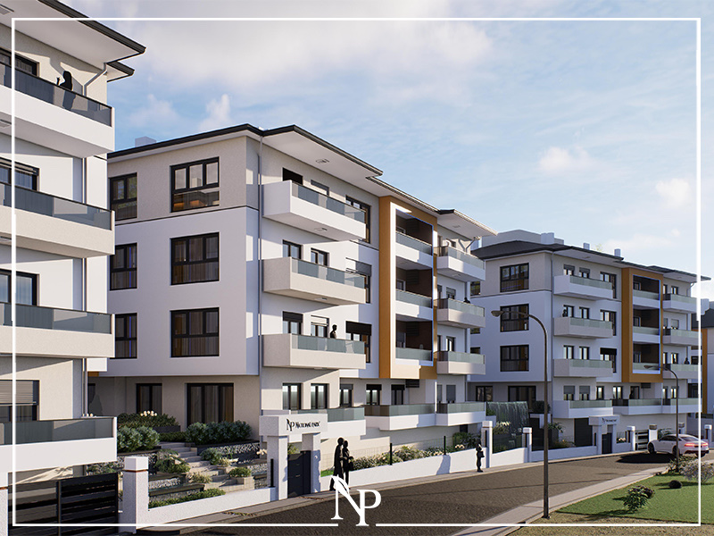
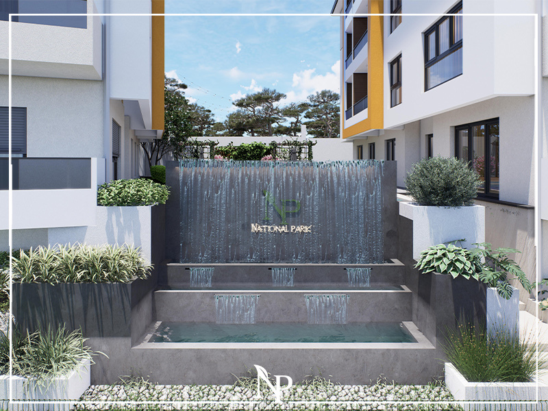
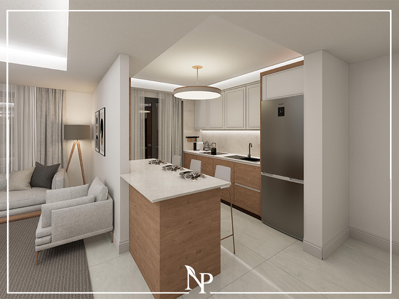
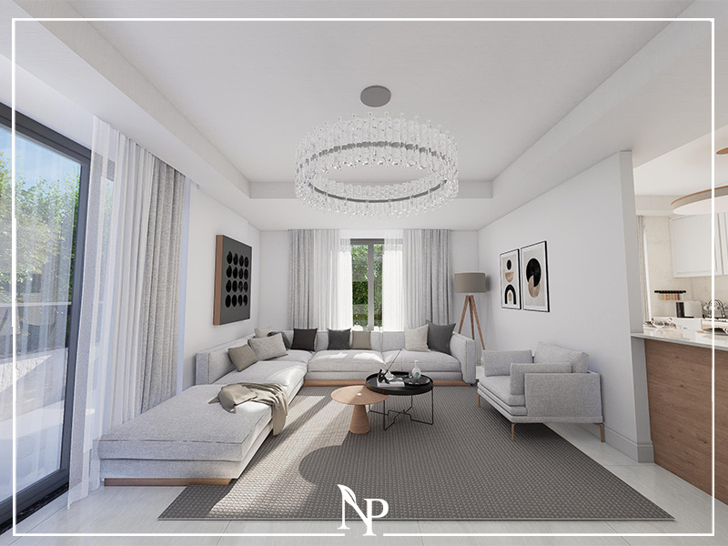

Kuşadası, Aydın, Türkiye

Geliştirici, Kuşadası’ndaki NP Yapı Sitesi’ni devam eden projeler arasında listeliyor. Resmî sayfada birim sayısı, teslim tarihi veya müsaitlik belirtilmiyor.
Geliştiricinin proje galerisinden seçilen kaynak görseller.





Geliştirici tarafından devam eden projeler arasında listeleniyor; teslim tarihi veya müsait birim bilgisi belirtilmiyor. Kaynak 8 Ekim 2026 tarihinde kontrol edildi; müsaitlik ve tarihler geliştirici tarafından teyit edilmelidir.
Bu örnek talep toplamamaktadır. Yayımlanan sunumda onayladığınız iletişim bilgileri ve başvuru bağlantıları yer alır.